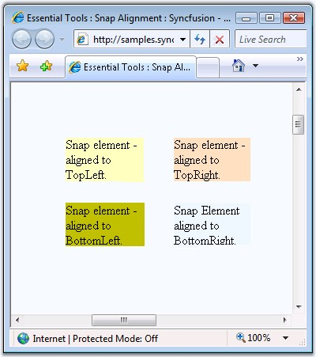
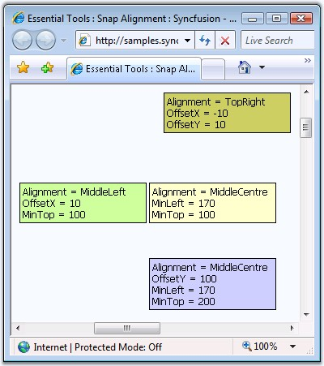

A snap element's position can be set on the browser window, such that it will appear fixed in that position, always in view, even when you scroll through the browser window. To apply such a behavior to the snap elements, the Alignment property should be set.
The position of the snap element can be set to one of the options such that the snap element will be at that position with respect to the browser window position.
|
Property |
Description |
|
Alignment |
Specifies the position of the snap relative to the screen. The options included are as follows: · TopLeft · TopCentre · TopRight · BottomLeft · BottomCentre · BottomRight · MiddleLeft · MiddleCentre · MiddleRight |

Figure 379: Snap Alignment and Offset properties set for snap elements
To set the distance along the X and Y axis for an aligned snap element, it can be set by specifying the OffsetX and OffsetY properties.
|
Property |
Description |
|
OffSetX |
Specifies the distance from the X axis while aligning, in pixel. The default value is 0. |
|
OffSetY |
Specifies the distance from the Y axis while aligning, in pixels. The default value is 0. |

Figure 380: Snap Alignment and Left, and Top distance set for snap elements
The distance of a snap element from the edge of the page can be set through MinTop and MinLeft properties. Make sure to set the Alignment property.
|
Property |
Description |
|
MinLeft |
The integer number indicating minimum distance from left, in pixel. The default value is 0. |
|
MinTop |
The integer number indicating minimum distance from left, in pixel. The default value is 0. |
The snap element's various alignment properties can be set as follows.
|
[aspx]
<cc1:Snap ID="Snap2" runat="server" Height="70" Width="100px" DockingContainers="tdmin,tdcol2" BackColor="#FFFFC0" Alignment="TopLeft" OffsetX="50" OffsetY="50" MinLeft="50" MinTop="50"> </cc1:Snap>
<cc1:Snap ID="Snap3" runat="server" Height="70" Width="100px" DockingContainers="panel1" BackColor="#FFE0C0" BorderColor="#FFE0C0" Alignment="TopRight" OffsetX="-50" OffsetY="50" MinLeft="100" MinTop="50"> </cc1:Snap>
<cc1:Snap ID="Snap4" runat="server" Height="70" Width="100px" BackColor="#C0C000" Alignment="BottomLeft" OffsetX="50" OffsetY="-50" MinLeft="0" MinTop="100"> </cc1:Snap>
<cc1:Snap ID="Snap5" runat="server" Height="70" Width="100px" BackColor="AliceBlue" Alignment="BottomRight" OffsetX="-50" OffsetY="-50" MinLeft="100" MinTop="100"> </cc1:Snap> |
Here, the code snippet for alignment settings for a single snap element is given below.
|
[C#]
this.Snap1.Alignment = SnapAlignType.TopLeft; this.Snap1.MinLeft = 50; this.Snap1.MinTop = 50; this.Snap1.OffsetX = 50; this.Snap1.OffsetY = 50; |
|
[VB]
Private Me.Snap1.Alignment = SnapAlignType.TopLeft Private Me.Snap1.MinLeft = 50 Private Me.Snap1.MinTop = 50 Private Me.Snap1.OffsetX = 50 Private Me.Snap1.OffsetY = 50 |